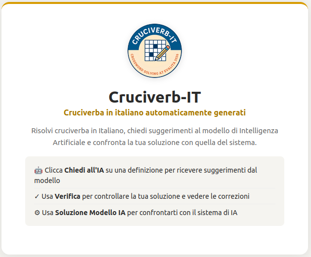
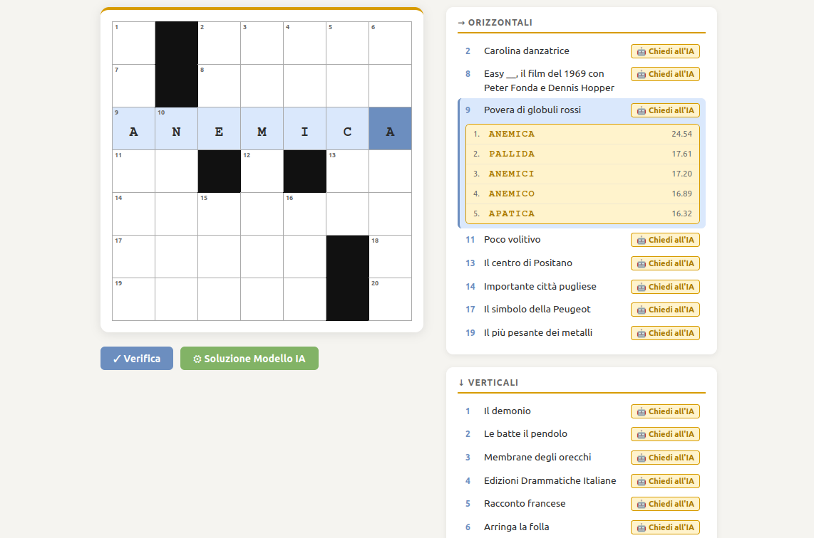
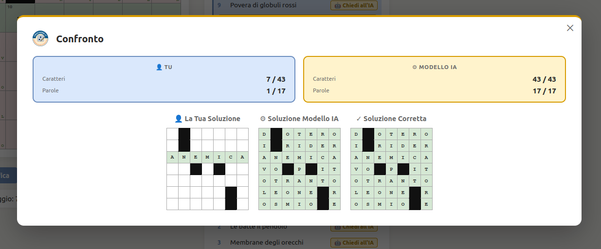

We have just released Cruciverb-IT, a new web application developed in the context of the EVALITA 2026 shared task on Italian crossword solving. The platform allows users to play automatically generated Italian crosswords while interacting with an AI system specifically designed to tackle crossword clues.
The goal of Cruciverb-IT is twofold: on the one hand, it provides an interactive environment where anyone can experiment with AI-assisted crossword solving; on the other, it serves as a demonstration platform to explore how modern language models handle lexical knowledge, clue interpretation, and word retrieval in Italian.

The application generates crossword grids automatically and lets players choose different grid sizes (from 5×5 to 13×13). During the game, users can interact with the system through three main features:
- Ask the AI to obtain candidate answers for a clue generated by the model;
- Verify your solution to check which letters are correct or incorrect;
- Compare with the AI solution, evaluating how the system performs against the human player.
At the core of Cruciverb-IT lies a lightweight, specialized AI model based on an Asymmetric Dual Encoder (ADE) architecture trained with contrastive learning. The model encodes crossword clues and candidate answers into a shared latent space, enabling efficient retrieval of the most likely solutions using FAISS nearest-neighbor search. Unlike large proprietary models, this approach focuses on efficiency and task specialization.

The model powering the system is publicly available on Hugging Face under the name cruciverb-it/crossword-space-mpnet-base-ade, making the project fully reproducible and accessible for further research.
With Cruciverb-IT we aim to provide both a playful interface for exploring AI capabilities and a research tool for studying lexical reasoning and clue interpretation in Italian language models.
You can access Cruciverb-IT at the following link: Cruciverb-IT.